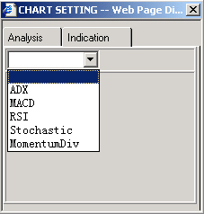

Charts
The
Chart dialog is activated through mouse click at the Chart button in the Menu
of the main screen.
Chart dialog
-
Type
-
- Real Time
- 1 minute
- 5 minute
- Daily
- Weekly
- Monthly
-
Item
- a pull down box provides user to select charting instrument
-
Style Type
-
the following are available for user sel
ection:
- Candle
- High HiLo
- Close HiLo
- Open CloseHiLo
- A & I -for selection of Analysis & indicator
-
Clear
-
to
clear all lines drawn by the user
- Draw - to enable the user to draw lines on the graph
Analysis selection
|
 Indicator selection
|